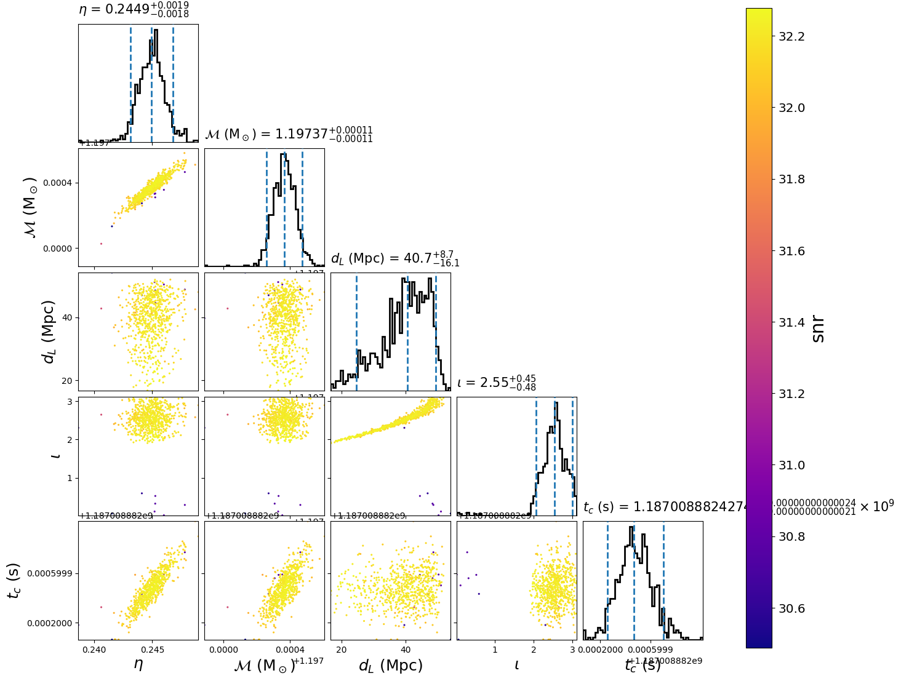

Using the relative model
The relative model is useful for when you know the parameters of your signal (say the masses, spins, etc of a merger) that are near the peak of the likelihood. In this case, we don’t need to calculate the likelihood at the full frequency resolution in order to accurately sample the neighborhood of the maximum likelihood. This can greatly speed up the calculation of the likelihood. To use this model you provide the near-peak parameters as fixed arguments as in the configuration file below.
This example demonstrates using the relative model with the
emcee_pt sampler. First, we create the following configuration file:
[model]
name = relative
low-frequency-cutoff = 30.0
high-frequency-cutoff = 1024.0
epsilon = 0.03
mass1_ref = 1.3757
mass2_ref = 1.3757
tc_ref = 1187008882.42
[data]
instruments = H1 L1 V1
analysis-start-time = 1187008482
analysis-end-time = 1187008892
psd-estimation = median
psd-segment-length = 16
psd-segment-stride = 8
psd-inverse-length = 16
pad-data = 8
channel-name = H1:LOSC-STRAIN L1:LOSC-STRAIN V1:LOSC-STRAIN
frame-files = H1:H-H1_LOSC_CLN_4_V1-1187007040-2048.gwf L1:L-L1_LOSC_CLN_4_V1-1187007040-2048.gwf V1:V-V1_LOSC_CLN_4_V1-1187007040-2048.gwf
strain-high-pass = 15
sample-rate = 2048
[sampler]
name = emcee_pt
ntemps = 4
nwalkers = 100
niterations = 300
[sampler-burn_in]
burn-in-test = min_iterations
min-iterations = 100
[variable_params]
; waveform parameters that will vary in MCMC
tc =
distance =
inclination =
mchirp =
eta =
[static_params]
; waveform parameters that will not change in MCMC
approximant = TaylorF2
f_lower = 30
#; we'll choose not to sample over these, but you could
polarization = 0.0
ra = 3.44615914
dec = -0.40808407
#; You could also set additional parameters if your waveform model supports / requires it.
; spin1z = 0
[prior-mchirp]
; chirp mass prior
name = uniform
min-mchirp = 1.1876
max-mchirp = 1.2076
[prior-eta]
; symmetric mass ratio prior
name = uniform
min-eta = 0.23
max-eta = 0.25
[prior-tc]
; coalescence time prior
name = uniform
min-tc = 1187008882.4
max-tc = 1187008882.5
[prior-distance]
#; following gives a uniform in volume
name = uniform_radius
min-distance = 10
max-distance = 60
[prior-inclination]
name = sin_angle
[waveform_transforms-mass1+mass2]
; transform from mchirp, eta to mass1, mass2 for waveform generation
name = mchirp_eta_to_mass1_mass2
For this example, we’ll need to download gravitational-wave data for GW170817:
set -e
for ifo in H-H1 L-L1 V-V1
do
file=${ifo}_LOSC_CLN_4_V1-1187007040-2048.gwf
test -f ${file} && continue
curl -O -L --show-error --silent https://dcc.ligo.org/public/0146/P1700349/001/${file}
done
By setting the model name to relative we are using
Relative.
Now run:
pycbc_inference \
--config-file `dirname "$0"`/relative.ini \
--nprocesses=1 \
--output-file relative.hdf \
--seed 0 \
--force \
--verbose
This will run the emcee_pt sampler. When it is done, you will have a file called
relative.hdf which contains the results. It should take about a minute or two to
run.
To plot the posterior distribution after the last iteration, run:
pycbc_inference_plot_posterior \
--input-file relative.hdf \
--output-file relative.png \
--z-arg snr
This will create the following plot:
{kind=link}
The scatter points show each walker’s position after the last iteration. The points are colored by the signal-to-noise ratio at that point.